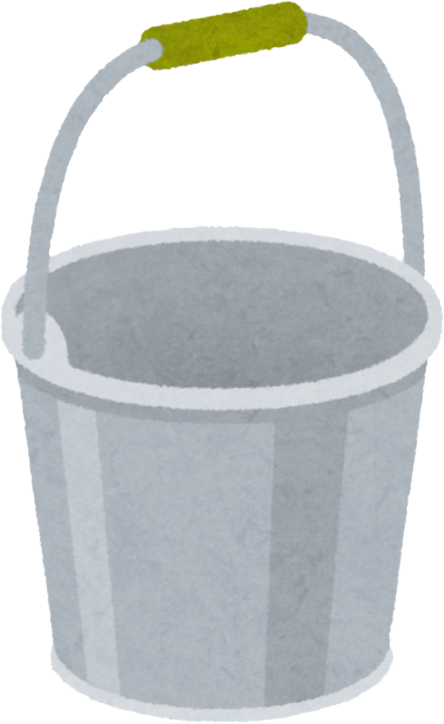
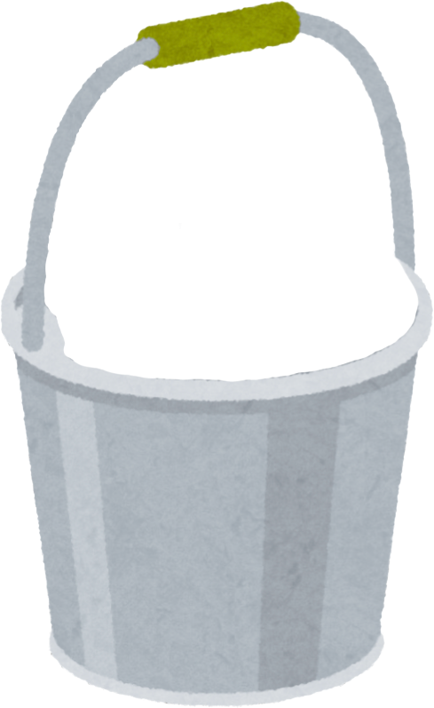
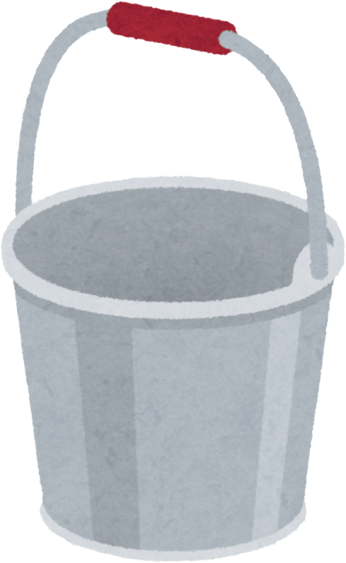
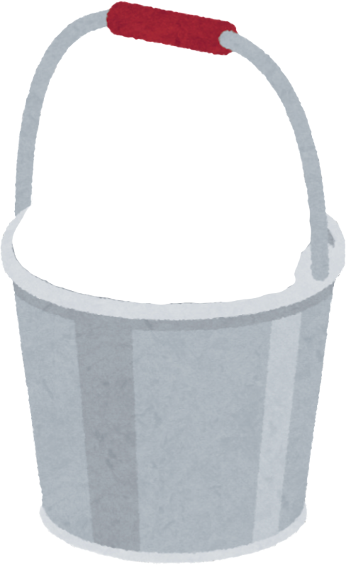

Let's start with an example. Would you prefer an example about a social situation or academics?




Let's review!
What's a situation in the past week that made you upset?
What thought went through your mind?
How did this thought make you feel?
Here is your thought: ""
First, list the evidence that supports this thought.
Write as many as you can think of! Make sure your evidence is based on facts, not emotions.
Here is your thought: ""
Now list the evidence that opposes this thought.
Ask yourself these questions:
- Is there any other way of looking at this situation?
- What would you tell a friend who had the thought?
- Am I overestimating (or underestimating) how much control and responsibility I have?
It's harder for our brains to come up with evidence opposing our thoughts. That doesn't mean there isn't any; it's just harder to think of it. Write as many as you can think of!
You came up with more evidence supporting the thought than opposing it.
Supports
Opposes
Look at the evidence you provided. Does it fully support the thought?
Your negative thought isn't necessarily a reflection of your character or accurate on the whole.
Here are some things you can do if the evidence supports your thought:
- Change your own behavior (e.g., consider putting your energy towards friends who support you)
- Change how you're thinking about the thought (e.g., "maybe they don't like me, but that's a reflection of their character, not mine")
- Even if the evidence supports the negative thought, remind yourself that it might not be as bad as you think. You've made it through before, you'll make it through again.
- If you can't change the situation, adjust your expectations of yourself, other people, or the world around you so you can be kinder to yourself.
What adjustment makes the most sense for your situation?
You came up with an equal amount of evidence that supports and opposes the thought.
Supports
Opposes
You came up with more evidence opposing the thought than supporting it.
Supports
Opposes
Like any new skill, checking the evidence takes practice. It can be hard when you start, but you'll get better the more you do it.
You can check the evidence anytime you're having negative thoughts - an effective first step to feeling better!
Enter your email below to receive a copy of your responses.
We recommend you do this so you can refer back to them. Your email will only be used to email your responses (we promise!).